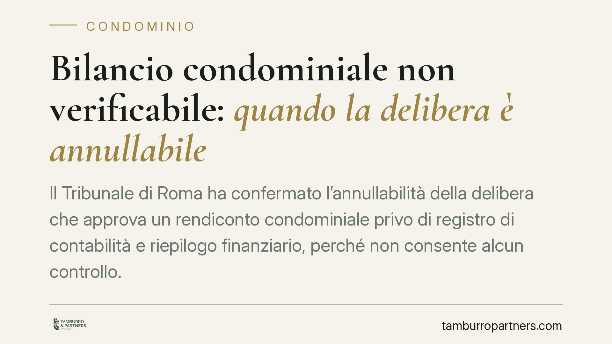

Bilancio condominiale non verificabile: quando la delibera è annullabile
Il Tribunale di Roma ha confermato l'annullabilità della delibera che approva un rendiconto condominiale privo di registro di contabilità e riepilogo finanziario, perché non consente alcun controllo. Una pronuncia che rafforza il diritto dei condomini a documenti chiari e verificabili, e riconosce alla consulenza tecnica di parte un ruolo probatorio concreto.

Il caso
Un condomino impugna la delibera assembleare che approva il rendiconto annuale. Il motivo: il bilancio presentato dall'amministratore non è controllabile, perché mancano gli elementi che dovrebbero consentire di ricostruire e verificare le voci di spesa e di entrata. Il Tribunale di Roma gli dà ragione e annulla la delibera.
La decisione poggia su un principio semplice ma spesso disatteso nella prassi: un rendiconto che non si può verificare non è un vero rendiconto. E se l'assemblea lo approva, la relativa delibera è viziata.
Inquadramento normativo
La norma di riferimento è l'art. 1130-bis del codice civile, introdotto dalla riforma del condominio (legge n. 220/2012). Il rendiconto condominiale non è una semplice tabella di numeri: la legge ne definisce la struttura minima.
Secondo la disposizione, il rendiconto si compone di tre parti: il registro di contabilità (dove sono annotati in ordine cronologico i movimenti di cassa), il riepilogo finanziario (la sintesi della situazione patrimoniale ed economica) e una nota sintetica esplicativa della gestione, con indicazione dei rapporti in corso e delle questioni pendenti.
L'assenza del registro di contabilità e del riepilogo finanziario priva il condomino degli strumenti per esercitare il controllo che la legge gli riconosce. Non si tratta di un difetto formale: è la sostanza stessa della rendicontazione a venire meno. Per questo la delibera di approvazione è annullabile, non nulla: va impugnata nei termini di legge (trenta giorni, ex art. 1137 cod. civ.) dai condomini assenti, dissenzienti o astenuti.
La consulenza tecnica di parte come prova
L'aspetto più interessante della pronuncia riguarda il piano probatorio. Il condomino ha sostenuto le proprie ragioni con una consulenza tecnica di parte, cioè una perizia redatta da un professionista di sua fiducia, al di fuori del contraddittorio processuale.
Il Tribunale ha ritenuto che tale elaborato, pur non avendo il valore di una consulenza disposta dal giudice, possa fondare la decisione quando evidenzia con chiarezza l'impossibilità di verificare i conti. In pratica, chi impugna non è costretto ad attendere una perizia d'ufficio: può portare fin da subito un'analisi tecnica che dimostri l'inattendibilità del documento contabile.
Implicazioni pratiche
Per i condomini, la pronuncia è un rafforzamento di garanzie. Il diritto a un bilancio leggibile e controllabile non è un favore dell'amministratore, ma un contenuto necessario della rendicontazione. Un prospetto riassuntivo privo di documentazione di supporto non basta ad adempiere l'obbligo di legge.
Per l'amministratore di condominio, il messaggio è altrettanto netto. Predisporre il rendiconto significa fornire tutte le componenti previste dall'art. 1130-bis, conservare la documentazione giustificativa e renderla consultabile. Un bilancio incompleto espone la delibera al rischio di annullamento, con conseguente necessità di riconvocare l'assemblea e, in alcuni casi, con profili di responsabilità gestionale.
Per il revisore condominiale, la cui nomina può essere deliberata dall'assemblea, la decisione conferma la centralità di un controllo tecnico sui conti, soprattutto in gestioni complesse o contestate.
Cosa fare in concreto
- Verifica la completezza del rendiconto prima dell'assemblea: controlla la presenza del registro di contabilità, del riepilogo finanziario e della nota esplicativa.
- Richiedi la documentazione di supporto (fatture, estratti conto, giustificativi). La legge riconosce il diritto di prendere visione e di estrarre copia.
- Se i conti non sono verificabili, metti a verbale il dissenso o l'astensione: è il presupposto per poter impugnare la delibera.
- Agisci entro trenta giorni dalla delibera (o dalla comunicazione del verbale, per gli assenti): oltre il termine il diritto di impugnazione decade.
- Valuta una consulenza tecnica di parte a sostegno dell'impugnazione, quando l'irregolarità contabile richiede un'analisi specialistica.
Consigliamo di non sottovalutare le irregolarità contabili ricorrenti: un singolo bilancio incompleto può segnalare criticità gestionali più ampie, che è opportuno affrontare tempestivamente.
Contributo informativo a cura di Tamburro & Partners - Avv. Giuseppe Tamburro. Non costituisce parere legale.
Ogni condominio ha una storia a sé.
Se gestisci un'amministrazione e vuoi un confronto su una specifica questione condominiale, scrivi allo studio. Ti rispondiamo entro un giorno lavorativo.